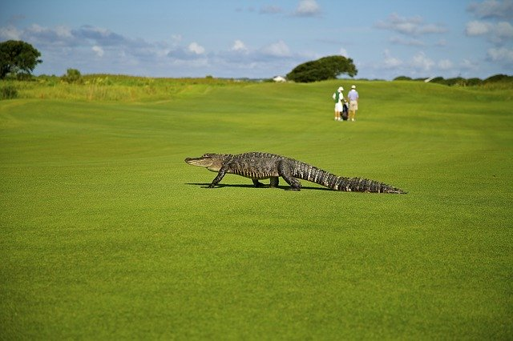

Niečo o mne:
Som zodpovedný a ľudia sa na mňa môžu spoľahnúť. Rád pracujem v kolektíve, ale nerobí mi žiaden problém pracovať samostatne. V krízových situáciách dobre zvládam stres a snažím sa vždy myslieť s chladnou hlavou. Rád sa učím nové veci a ako sa môžem stále zdokonaľovať. Vo väčšine prípadov myslím kreatívne a snažím sa stále prísť s niečím originálnym. Vo voľnom čase hrám na gitare, pozerám filmy, seriály alebo počúvam hudbu. Tiež mám rád šport ako napríklad futbal, volejbal, florbal, ping pong alebo šípky. Futbal som hrával aj súťažne za Sninu, ale skončil som lebo som sa nestíhal učiť.  Na gitaru som začal hrať od 9 rokov, kedy ma rodičia prihlásily na ZUŠ, keďže som stále chcel byť gitaristom. Zo začiatku ma to veľmi nebavilo a a ani mi to nešlo, až dokedy som na prehrávkach,čo bolo niečo ako koncert pre rodičov na škole, som sa nepomýlil a zasekol som sa uprostred vystúpenia. Vtedy som si povedal,že sa to už nestane a začal som častejšie hrať a pripravovať sa na hodiny gitary, až ma nakoniec učiteľ vybral na Vianočný koncert, odvetedy som začal chodiť na rôzne koncerty a súťaže a doteraz si myslím, že človek dokáže všetko čo chce, len musí chcieť a nesmie byť lenivý.
Vo voľnom čase tiež rád varím alebo pečiem. Najradšej pripravujem kotlíkový guľaš. Recept:
Cibule nasekáme na menšie kúsky a restujeme v kotlíku za občasného miešania na roztopenej bravčovej masti.
Ochutíme soľou, celým čiernym korením a bobkovými listami.
Strúčiky cesnaku rozpučíme čepeľou noža, nakrájame nadrobno, pridáme k cibuli a prikryjeme pokrievkou. Keď je cibuľa do sklovita opečená, pridáme mäso a restujeme ho, pokým sa nezatiahne.
Potom ho ochutíme mletou paprikou, premiešame a ešte chvíľu restujeme. Pridáme zemiaky nakrájané na kocky, dochutíme soľou, podlejeme vodou a prikryjeme pokrievkou.
Po približne 20 minútach pridáme na menšie kúsky nakrájané umyté papriky a paradajky. Guláš dusíme pod pokrievkou domäkka. Na záver dochutíme majoránkou.
V poslednej dobe sa zaujímam o to čo sa deje nové vo svete technológii a programovania. Momentálne študujem na Fakulte elektrotechniky a informatiky Slovenskej technickej univerzity,
kde som v treťom ročníku bakalárského štúdia.
V tomto zimnom semestry mám tieto predmety:
- Webové technológie 1
- Analýza a zložitosť algoritmov
- Softwérové inžinierstvo
- Programovacie techniky
- Telesná kultúra
- Operačné systémy